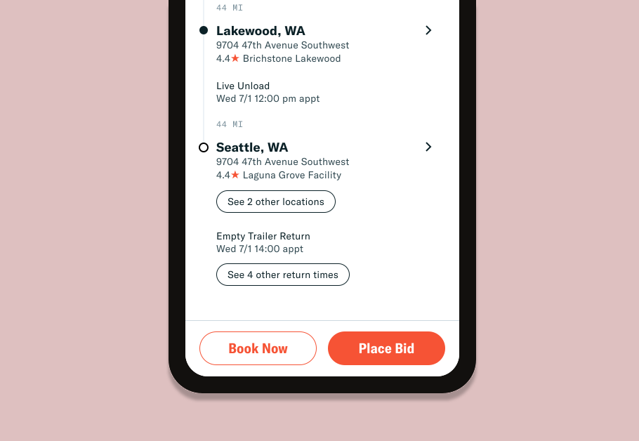
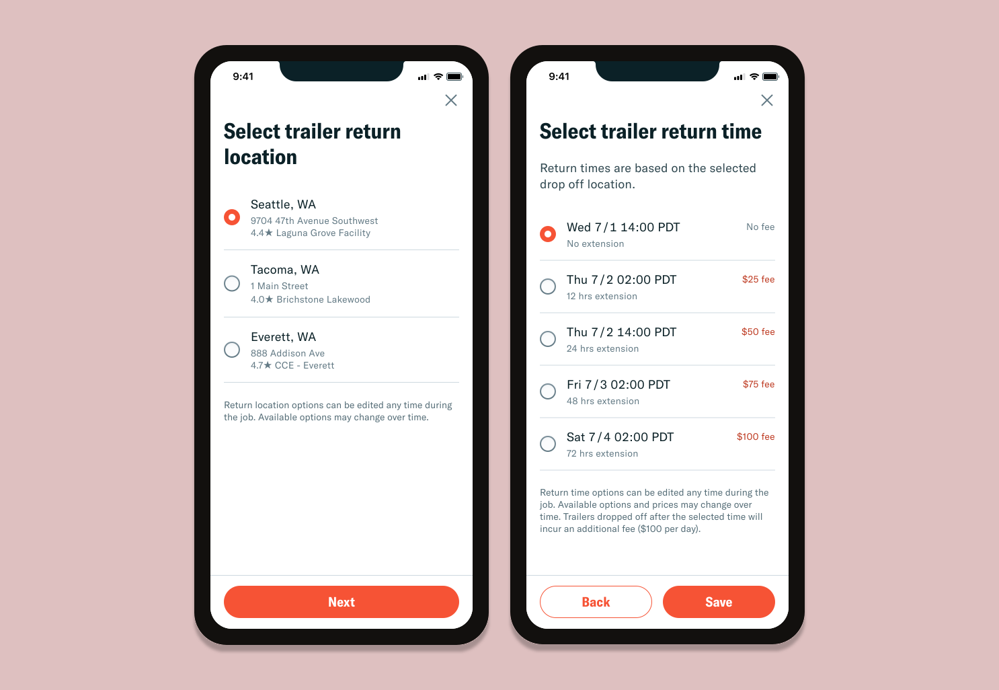
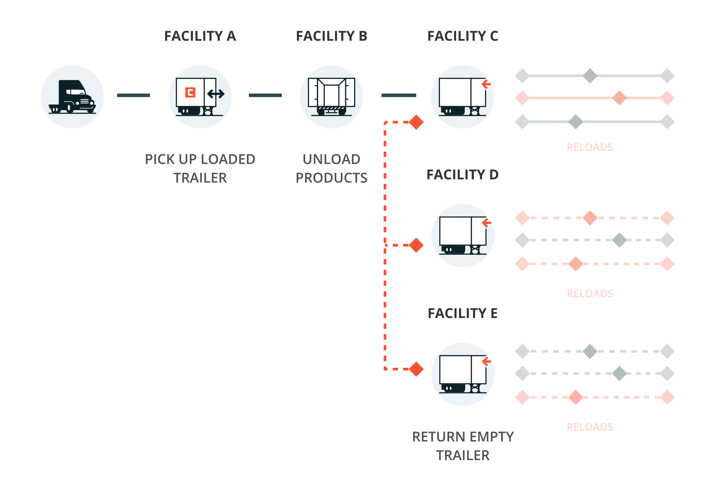

To enable for a more flexible trailer network, I worked with the Fleet Optimization team to allow carriers to choose where to return an empty trailer at the end of a job.
Convoy is a marketplace that connects shippers looking to have their products transported with truck drivers looking for jobs. Jobs are determined by trailer types. One type of job Convoy offers to carriers are power only loads. Instead of using their own trailers, which generally cost ~$30,000, carriers can use Convoy’s trailers to complete a load. This lowers the barrier of entry for carriers but also lowers the payout for the job.
How these power only loads would work is that the carriers would show up with their tractors to the shipper facility, pick up a pre-loaded trailer, unload the products at another facility and return the empty trailer to a yard.

Logistics is about optimizations and making sure truck drivers’ time and equipment are 100% utilized. In 2019, Convoy introduced Extendable Trailer Returns (ETR) which allowed carriers to delay the trailer return time so that they find loads that require trailers, be more productive with their time, and earn even more money. Built largely on the success of ETR, we wanted to introduce Flexible Trailer Return Locations (FTR-L) as a way for:
Carriers to choose where they end up when a load is completed so that they can optimize their work schedule
Convoy to balance their fleet of trailers and introduce another way to earn money and increase margins on the trailer rental program

Power only loads with flexible trailer return times list the extension options and associated fees on the load details page. If the carrier is interested in it, they can bid or book on the job. They are then prompted to select the return time for the empty trailer.

Normally we would be able to apply the solution we have for flexible return times to the flexible return locations, but:

We expect to offer more selection options. We’ve been increasing the amount of time carriers can request as an extension and can potentially show up to 10 options.
We also expect to show more on the load details page. We plan to add a new Reloads widget section on the page and need to prioritize what to show.

We know that return times are dependent on the return location and that the fees and bonuses for changing the load details are dependent on the return time and location.
To track our design and business objectives, we will be tracking the following success metrics: increase in trailer program margins and increase in trailer utilization.
Allow carriers to select the return location for power only loads
Equip carriers with all necessary information to make their location selection
Clearly communicate the fees for the trailer return location updates
Enable a new dimension to a flexible trailer network
Increase revenue to bring the company closer to profitability
In early concepts, I explored ideas on how we could incorporate the feature into the stop details section and help carriers select a return location.

As I was exploring ideas, I put together a list of questions that I couldn't answer but knew that it would heavily influence the designs:
Is time or location more important? Are they equally important?
When is the best time to ask the user to pick time and/or location?
Will carriers be familiar with nearby metro cities?
What information do the carriers need to know to select a return location?
To answer these unknowns, I reviewed the design concepts with carriers to evaluate the usability and their understanding on the new flexible trailer return locations feature.
After reviewing the prototype with 6 carriers, I learned that:
Carriers’ work schedules are volatile so there’s no singular way to think about the trailer return options. Time and location are equally important.
There are secondary factors that help carriers decide which trailer location to return to (familiarity with facility, cost of the fee, time of day, upcoming loads).
Carriers prefer to configure the return location as they're bidding or booking on the load. They're looking to solidify their schedule and loads that will precede and follow.
Carriers tend to work on the same lane and so carriers are familiar with nearby metro cities. If they aren't, they tend to resort to a navigation app.
A map view of the return locations would be a nice-to-have to have since carriers have other methods of searching for the satellite view of the facility.
From these findings, I decided that we would allow carriers to configure the trailer return as they're bidding and booking. We would give equal emphasis to the return time and location and focus on the essential information they would need to select a return location (metro city, facility name, address, and rating, and associated fee and bonus). A map view could be helpful in figuring out the location if the carrier was not familiar with it, but not essential to the launch of this feature.


A way to edit the return location and time without surfacing all options
By hiding the return details behind a button and within separate pages, carriers can see the most important information about the load -- the stops and appointment times -- and choose to see the trailer return options if they're interested.

Fee and bonus shown only on the return time selection page
Instead of showing separate fees for changing the trailer return location and requesting an return extension, the fee and bonus is only shown on the time selection page so that the carriers don't have to do mental math to figure out the total costs.
With this feature, we’ve allow carriers to choose their trailer return location and time, but how might we help carriers make the correct selections to maximize their schedule with compatible reloads?

In another project, I focus on bridging together the Flexible Trailer Return Locations feature with reloads to make Convoy a more powerful tool for carriers to book loads.